Introduction to metR
Aleksandra Brodecka, Przemysław Biecek
2017-11-28
Introduction
metR package allows comprehensive data analysis from methylation studies. By metR we can find create regions, get basic statistics about them, plot methylation rate or arrange created regions from the most interesing by diffrent methods.
We will use the following packages:
Small probes - examples from description
sample.1 and sample.2 are datasets containing a part of the methylation data from some patient’s healthy and diseased tissue. See ?sample.1 or ?sample.2 if you want more details about columns.
data("sample.1")
data("sample.2")Preprocessing
We use preprocessing function to binding these probes on chromosome and position:
data <- preprocessing(sample.1, sample.2)
DT::datatable(head(data, 10))Creating regions
Now we can create region. After creation they will be tested if there is significant difference between two probes in methylation rate.
One way is to use create.tiles.fixed.length function, See ?create.tiles.fixed.length if you want some details.
data.tiles.0 <- create.tiles.fixed.length(data, tiles.length = 1000, common = T)
DT::datatable(head(data.tiles.0))data.tiles.1 <- create.tiles.fixed.length(data, tiles.length = 1000, common = F)
DT::datatable(head(data.tiles.1))We can also create region by create.tiles.max.gap function:
data.tiles.2 <- create.tiles.max.gap(data, gaps.length = 100)
DT::datatable(head(data.tiles.2))Basic statistics
We run get.stats function to get basic statisitcs about created regions:
stats.0 <- get.stats(data.tiles.0)
stats.1 <- get.stats(data.tiles.1)
stats.2 <- get.stats(data.tiles.2)
DT::datatable(head(stats.2))Which function gives us greater regions?
c(median(stats.0$meth.cov),median(stats.1$meth.cov),median(stats.2$meth.cov))## [1] 11 10 6Or greater methylation difference?
c(median(stats.0$meth.diff), median(stats.1$meth.diff) , median(stats.2$meth.diff))## [1] 0.05452228 0.05452228 0.07086208We propose tuning parameters: gaps.length, common and tiles.length depending on how long and how many regions we want to obtain.
Finding DMR
We can sort regions by 6 methods: Wilcoxon, t-Student, Kolmogorov-Smirnow tests or using logistic regression and its modifications. See ?find.DMR if you want some more details.
result <- find.DMR(data.tiles.2, methods = c('Wilcoxon', 'Ttest', 'KS', 'Reg.Log', 'Reg.Mixed', 'Reg.Corr.Mixed'))We get list of six data frames with columns: chr - chromosome, start and end which are min and max position of region and p.value which is p.value from tested method. Logistic regression methods return also data frame with beta.coeff columns which is beta coefficient og grouping variable. In each data frame regions are sorted by most interesing to uninteresing groups.
names(result)## [1] "Wilcoxon" "Ttest" "KS" "Reg.Log"
## [5] "Reg.Mixed" "Reg.Corr.Mixed"DT::datatable(head(result$Wilcoxon))We can change ordering logistic regressions from p.value of grouping variable to absolute value of beta coefficient. We must establish parameters: p.value.log.reg, p.value.reg.mixed or p.value.reg.corr.mixed. Function find.DMR returns only regions which have smaller p.values than p.value from adequate methods.
result.2 <-find.DMR(data.tiles.2, c('Reg.Log', 'Reg.Mixed', 'Reg.Corr.Mixed'), p.value.log.reg = 0.01, p.value.reg.mixed = 0.02, p.value.reg.corr.mixed=0.03)DT::datatable(head(result.2$Reg.Log))Plotting methylation
We use draw.methylation function: we have to give parameters like: data - data.frame from preprocessing function, chr - chromosome name, start and end which are min and max position of plotted region. Other parameters allow us change graphics parameters from ggplot object.
draw.methylation(data, chr = 'chr2', start = 171573000, end = 171574000, legend.title = 12, legend.position = 'bottom', plot.title = 17, axis.title.x = 12, axis.title.y = 12,
axis.text.x = 11, axis.text.y = 11,
size.x.dot = 7, size.y.dot = 4, legend.text = 8)
draw.methylation(data, chr = 'chr2', start = 171573000, end = 171574000, legend.title = 12, legend.position = 'bottom', plot.title = 17, axis.title.x = 12, axis.title.y = 12,
axis.text.x = 11, axis.text.y = 11,
size.x.dot = 7, size.y.dot = 4, bind.probes = F, smooth.methylation = F, legend.text = 8)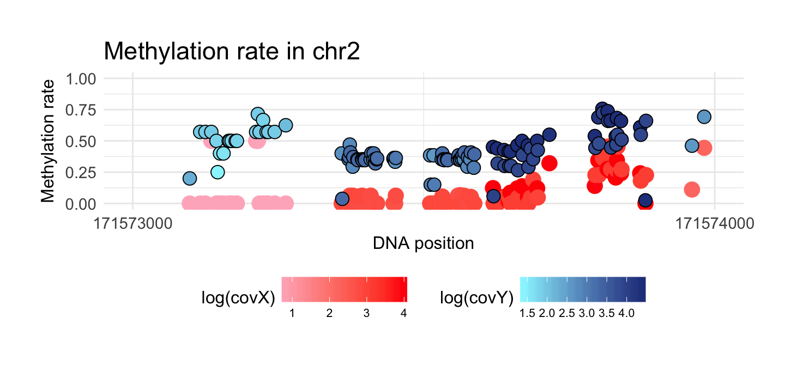
Comprehensive analysis:
Data for this example are downloaded from site: http://www.neuroepigenomics.org/methylomedb/download.html We used 4 control samples: Control1 AC, Control2 AC, Control3 AC and Control4 AC and 4 disease samples: SCZ1 AC, SCZ2 AC, SCZ3 AC, SCZ4 AC. After downloading we summed all results on the same position and chromosome separately from control and disease samples.
In this file we created analysis of DMR in chromosome 1. The code about preprocessing files can be found in examples/prep.MethylomeDB.R in this repo. Result of this script are two data.frames ‘control’ and ‘disease’ that are included in metR package.
data("control")
DT::datatable(head(control))data("disease")
DT::datatable(head(disease))Preprocess data:
data <- preprocessing(control, disease)
DT::datatable(head(data))Check correlation:
data %>% filter(prob == 'x') %>% mutate(a = log((meth + 1)/(unmeth + 1))) %>% pull(a) -> a
data %>% filter(prob == 'y') %>% mutate(b = log((meth + 1)/(unmeth + 1))) %>% pull(b) -> b
cor(a,b)## [1] 0.8895702So we see that these probes are highly correlated.
Creating regions
After preprocessing we can create region. After creation they will be tested if there is significant difference between two probes in methylation rate.
data.tiles.1 <- create.tiles.fixed.length(data, tiles.length = 1000, common = F)
DT::datatable(head(data.tiles.1))data.tiles.2 <- create.tiles.fixed.length(data, tiles.length = 1000, common = T)
DT::datatable(head(data.tiles.2))data.tiles.3 <- create.tiles.max.gap(data, gaps.length = 100)
DT::datatable(head(data.tiles.3))Now we can compare how perform our functions. We got basic statistics about two probes. This is helpful if we want check coverage of created regions or methylation difference.
stats.1 <- get.stats(data.tiles.1)
stats.2 <- get.stats(data.tiles.2)
stats.3 <- get.stats(data.tiles.3)
DT::datatable(head(stats.3))stats.all <- gdata::combine(stats.1, stats.2, stats.3)
ggplot(stats.all, aes(x = meth.diff, group = source, col = source)) + geom_density() + theme_minimal() +
ggtitle('Distribution of methylation difference') +
theme(
plot.title = element_text(size=15),
axis.title.x = element_text(size=13),
axis.title.y = element_text(size=13),
axis.text.x = element_text(size=11),
axis.text.y = element_text(size=11),
legend.text = element_text(size = 11),
legend.title = element_text(size = 13))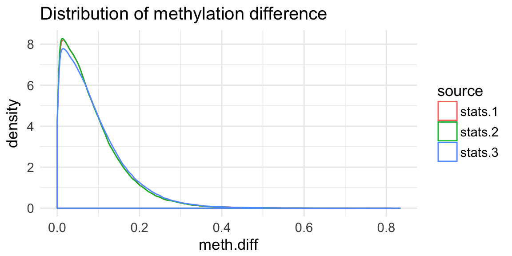
ggplot(stats.all, aes(x = meth.cov, group = source, col = source)) + geom_density() + theme_minimal() + xlim(0,100) +
ggtitle('Distribution of coverage regions') +
theme(
plot.title = element_text(size=15),
axis.title.x = element_text(size=13),
axis.title.y = element_text(size=13),
axis.text.x = element_text(size=11),
axis.text.y = element_text(size=11),
legend.text = element_text(size = 11),
legend.title = element_text(size = 13))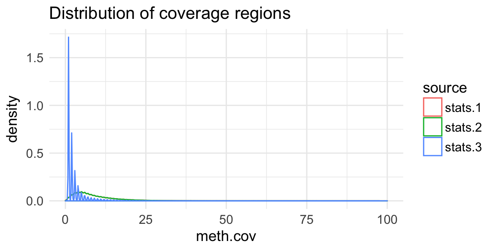
We also can join e.g stats.3 and data.tiles.3 on chromosome, start and end column and analyzing regions only if they coverage is greater than some specyfic values or other condition.
Finding DMR
# eval = F
result <- find.DMR(data.tiles.3, methods = c('Wilcoxon', 'Ttest', 'KS', 'Reg.Log', 'Reg.Mixed', 'Reg.Corr.Mixed'))Results of running function above are included in package. So now we only load data:
data('find.DMR.results')
names(find.DMR.results)## [1] "Wilcoxon" "Ttest" "KS" "Reg.Log"
## [5] "Reg.Mixed" "Reg.Corr.Mixed"DT::datatable(head(find.DMR.results$Wilcoxon, 10))Plotting methylation
Based on draw.methylation function we plotted ten best result from find.DMR.
top.n <- function(find.DMR.results, data, title){
p <- list()
for (i in 1:10){
p[[i]] <- draw.methylation(data, chromosom = 'chr1', start = pull(find.DMR.results[i, 'start']), end = pull(find.DMR.results[i, 'end']), bind.probes = F,
size.x.dot = 3.5, size.y.dot = 2, plot.title = 13, axis.title.x = 12, axis.title.y = 12, legend.position = 'none',
axis.text.x = 9, axis.text.y = 9)
}
grid.arrange(arrangeGrob(p[[1]], p[[2]], ncol = 2),
arrangeGrob(p[[3]], p[[4]], ncol = 2),
arrangeGrob(p[[5]], p[[6]], ncol = 2),
arrangeGrob(p[[7]], p[[8]], ncol = 2),
arrangeGrob(p[[9]], p[[10]], ncol = 2),
nrow = 5, top=textGrob(title, gp=gpar(fontsize=14,font=8)))
}top.n(find.DMR.results$Wilcoxon, data, 'Top results by Wilcoxon test')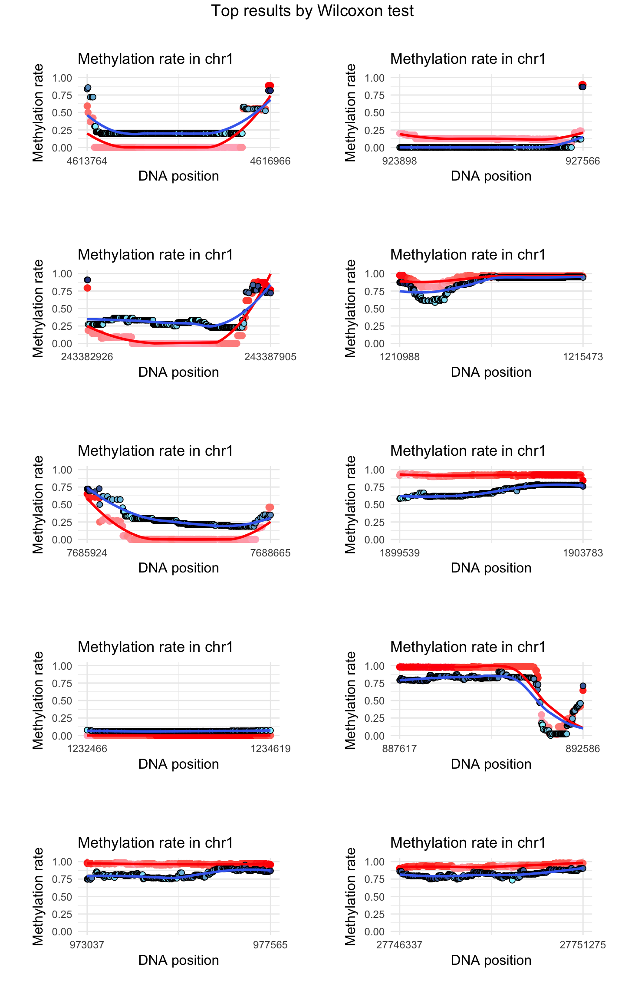
top.n(find.DMR.results$Ttest, data, 'Top results by t-test')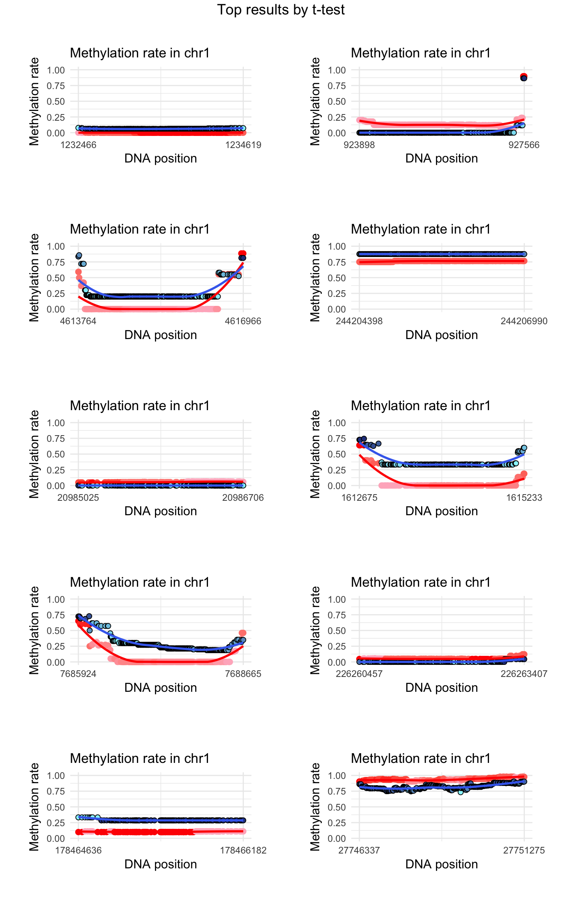
top.n(find.DMR.results$KS, data, 'Top results by K-S test')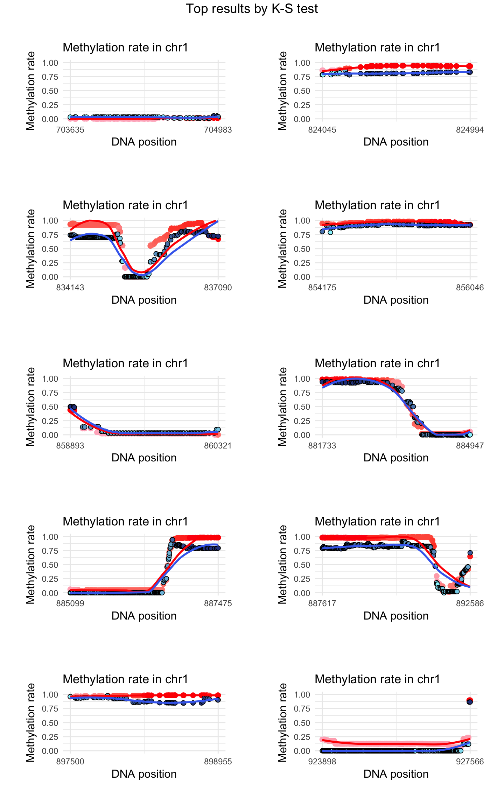
top.n(find.DMR.results$Reg.Log, data, 'Top results by logistic regression')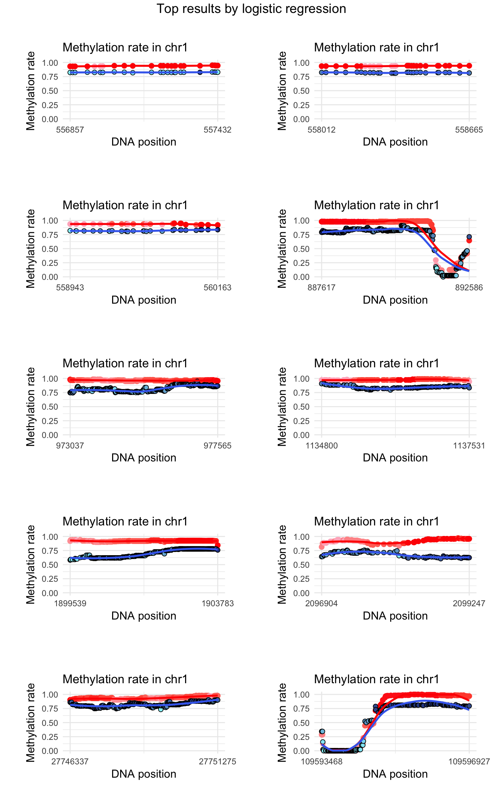
We can also sorting regions from logistic regression by effect.size:
find.DMR.results$Reg.Log.Beta <- find.DMR.results$Reg.Log %>% filter(p.value < 0.001) %>% arrange(-abs(beta.coef))The outcome above is equivalent if we run:
find.DMR.results <- find.DMR(data.tiles.3, methods = c('Reg.Log'), p.value.log.reg = 0.001)top.n(find.DMR.results$Reg.Log.Beta, data, 'Top results by logistic regression')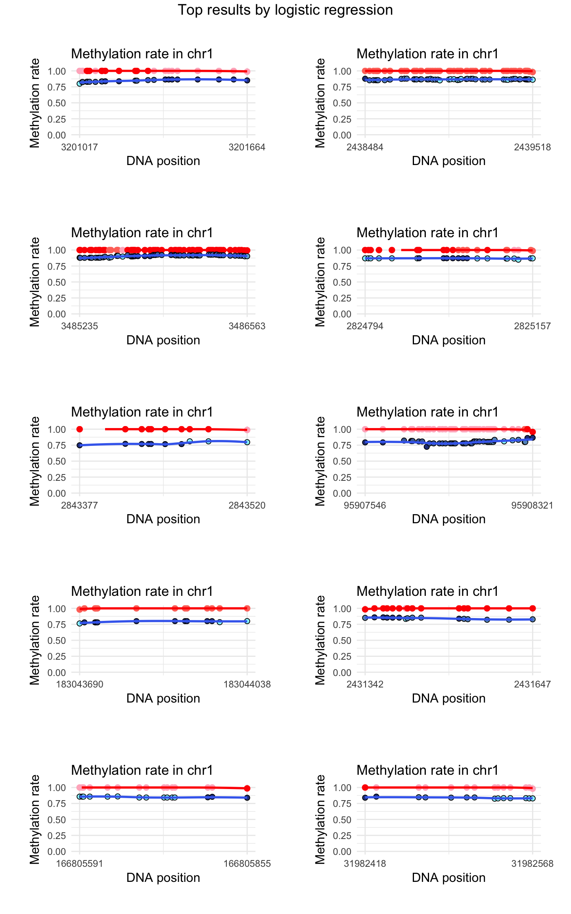
top.n(find.DMR.results$Reg.Mixed, data, 'Top results by log.reg with random effects')
find.DMR.results$Reg.Mixed.Beta <- find.DMR.results$Reg.Mixed %>% filter(p.value < 0.001) %>% arrange(-abs(beta.coef))
DT::datatable(head(find.DMR.results$Reg.Mixed.Beta))The outcome above is equivalent if we run:
find.DMR.results <- find.DMR(data.tiles.3, methods = c('Reg.Corr.Mixed'), p.value.log.reg = 0.001)top.n(find.DMR.results$Reg.Mixed.Beta, data, 'Top results by log.reg with random effects sorting on beta')
top.n(find.DMR.results$Reg.Corr.Mixed, data, 'Top results by log.reg with random effects with given corr. matrix')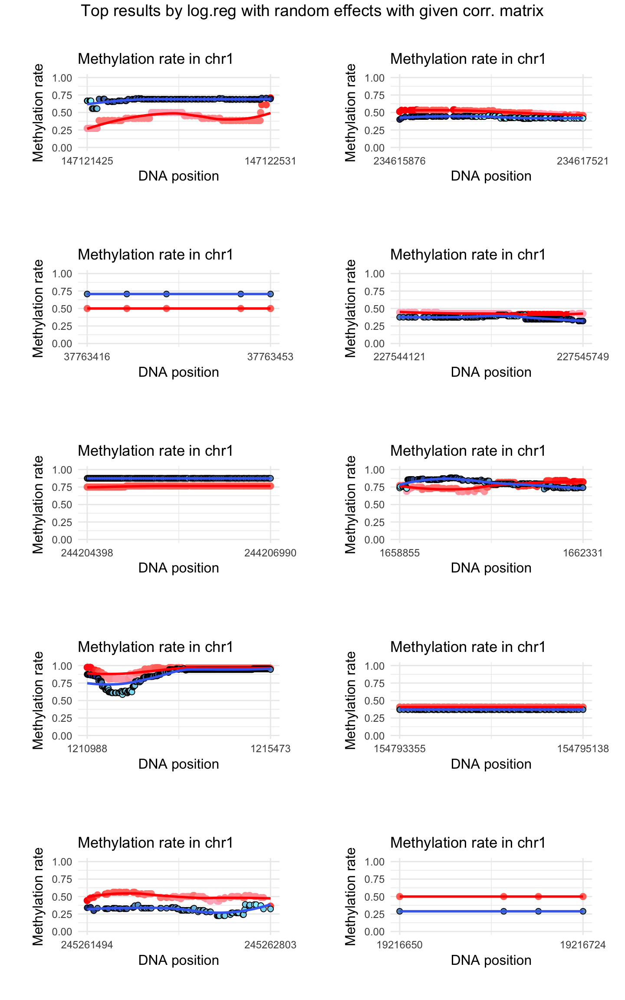
find.DMR.results$Reg.Corr.Mixed.Beta <- find.DMR.results$Reg.Corr.Mixed %>% filter(p.value < 0.001) %>% arrange(-abs(beta.coef))
DT::datatable(head(find.DMR.results$Reg.Corr.Mixed.Beta))The outcome above is equivalent if we run:
find.DMR.results <- find.DMR(data.tiles.3, methods = c('Reg.Corr.Mixed'), p.value.log.reg = 0.001)top.n(find.DMR.results$Reg.Corr.Mixed.Beta, data, 'Top results by log.reg with random effects with given corr. matrix sorting on beta')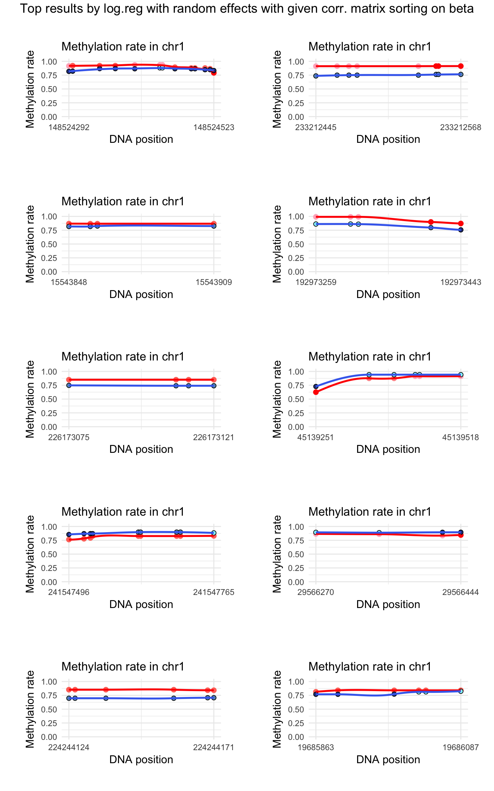
get_top <- function(data, n, stats){
data %>% slice(1:n) %>%
left_join(stats, by = c('chr', 'start', 'end')) %>%
dplyr::select(quantile, meth.diff, meth.cov)
}
top <- do.call(gdata::combine,lapply(find.DMR.results, get_top, n = 100, stats = stats.3))
ggplot(top, aes(x = source, y = quantile)) + geom_boxplot(aes(fill = source)) + ggtitle('Distribution of rank rate by methods') +
scale_fill_brewer(palette = "Set1") + theme_minimal() + theme(title = element_text(size = 14), axis.title = element_text(size = 13),
axis.text.y = element_text(size = 11), axis.text.x = element_text(size = 11, angle = 20) , legend.position = "None") +
labs(x="Method",y="Rank rate") +
scale_x_discrete(limits=c('Reg.Mixed','Reg.Corr.Mixed.Beta','Reg.Corr.Mixed', 'KS', "Wilcoxon", 'Reg.Log.Beta', 'Reg.Mixed.Beta', 'Reg.Log', 'Ttest'))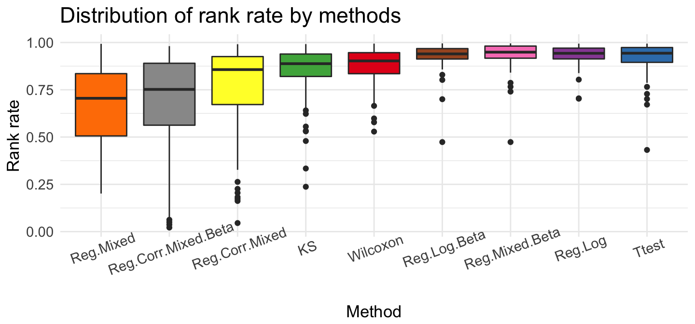
ggplot(top, aes(x = source, y = meth.diff)) + geom_boxplot(aes(fill = source)) + ggtitle('Distribution of methylation absolute difference by methods') +
scale_fill_brewer(palette = "Set1") + theme_minimal() + theme(title = element_text(size = 14), axis.title = element_text(size = 13),
axis.text.y = element_text(size = 11), axis.text.x = element_text(size = 11, angle = 11) , legend.position = "None") +
labs(x="Method",y="Methylation difference") +
scale_x_discrete(limits=c('Reg.Mixed','Reg.Corr.Mixed.Beta','Reg.Corr.Mixed', 'KS', "Wilcoxon", 'Ttest', 'Reg.Log', 'Reg.Log.Beta', 'Reg.Mixed.Beta'))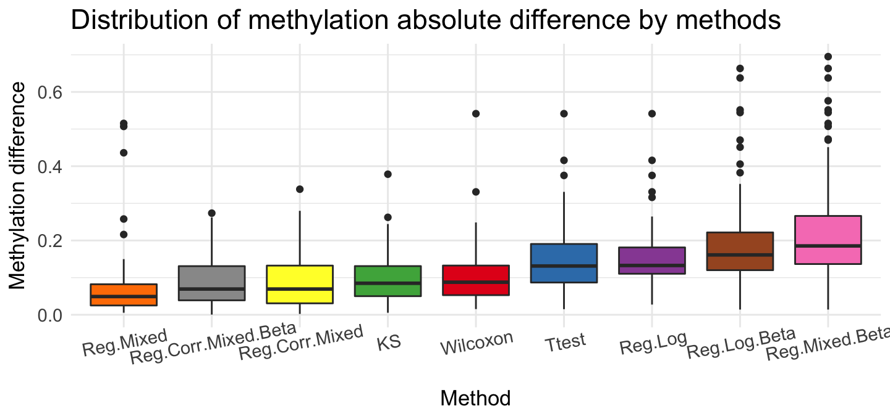
ggplot(top, aes(x = source, y = meth.cov)) + geom_boxplot(aes(fill = source)) + ggtitle('Coverage distribution by methods') +
scale_fill_brewer(palette = "Set1") + theme_minimal() + theme(title = element_text(size = 14), axis.title = element_text(size = 13),
axis.text.y = element_text(size = 11), axis.text.x = element_text(size = 11, angle = 20) , legend.position = "None") +
labs(x="Method",y="Coverage") +
scale_x_discrete(limits=c('Reg.Corr.Mixed.Beta','Reg.Log.Beta','Reg.Mixed.Beta', 'Reg.Mixed', "KS", 'Reg.Log', 'Reg.Corr.Mixed', 'Ttest', 'Wilcoxon'))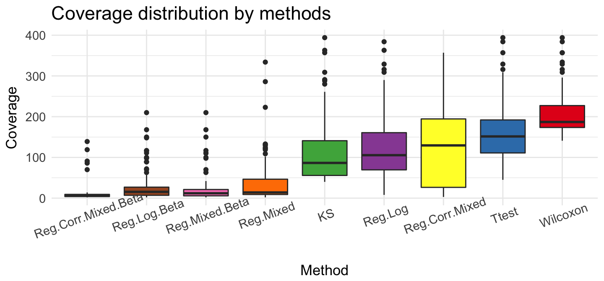
We can show, that these method given very different results. The rank rate is very good if we use Ttest, Reg.Log, Reg.Mixed.Beta and Reg.Log.Beta methods. The biggest differences we see for methylation coverage. Wilcoxon test recommended regions that have the most observations ~ 200. Reg.Corr.Mixed.Beta and Reg.Log.Beta proposed smaller group - about 10 observations. If we check methylation difference, Reg.Log.Beta and Reg.Mixed.Beta present very large difference in recommended regions